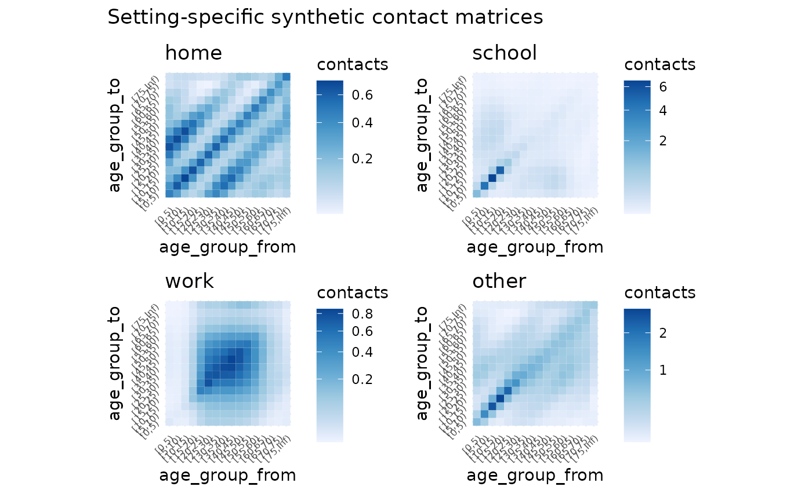
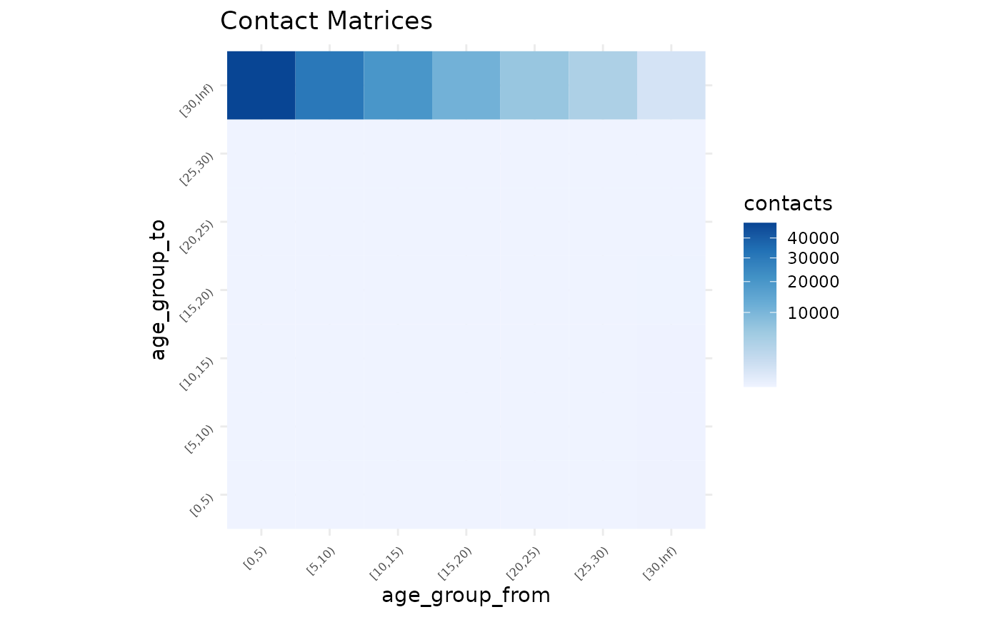
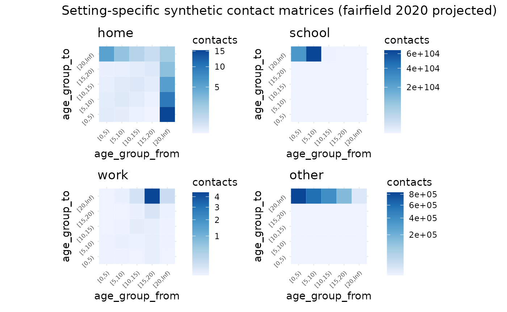

library(conmat)
library(socialmixr)
#>
#> Attaching package: 'socialmixr'
#> The following object is masked from 'package:conmat':
#>
#> polymod
library(ggplot2)
library(dplyr)
#>
#> Attaching package: 'dplyr'
#> The following objects are masked from 'package:stats':
#>
#> filter, lag
#> The following objects are masked from 'package:base':
#>
#> intersect, setdiff, setequal, union
library(tidyr)
library(mgcv)
#> Loading required package: nlme
#>
#> Attaching package: 'nlme'
#> The following object is masked from 'package:dplyr':
#>
#> collapse
#> This is mgcv 1.9-3. For overview type 'help("mgcv-package")'.
library(patchwork)The goal of conmat is to simplify the process of generating synthetic contact matrices for a given age population.
What is a contact matrix?
Contact matrices describe the degree of contact between individuals of given age groups. For example, this matrix describes the number of contacts between individuals.
#> 0-4 5-9 10-14
#> 0-4 10 3 4
#> 5-9 3 11 5
#> 10-14 4 5 13The rows and columns represent the age groups of the people. On the main diagonal we see that we have a higher number of contacts - showing that people of similar ages tend to interact more with one another. We can use the information in these matrices to model how diseases such as COVID-19 spread in a population through social contact.
Why do we need synthetic contact matrices?
Contact matrices are produced from empirical data resulting from a contact survey, which requires individuals to diary the amount and manner of contact a person has in a day. However, these surveys are highly time-consuming and expensive to run, meaning that only a handful of these empirical datasets exist globally.
We can use statistical methods to create synthetic contact matrices, which are new contact matrices that have been generalised to new countries based on existing surveys.
Why do we need conmat?
Existing methods only provide outputs of the contact matrices for each country, or at best, for urban and rural areas for a given country. We need methods that allow for flexibly creating synthetic contact matrices for a specified age population. This is because the age population distribution of many countries (e.g., Australia), are quite heterogeneous, and assuming it is homogeneous would result in inaccurate representation of community infection in many regions.
Quick example using Australian data
Suppose we want to get a contact matrix for a given region in
Australia, let’s say the city of Perth. We can get that from a helper
function, abs_age_lga.
perth <- abs_age_lga("Perth (C)")
perth
#> # A tibble: 18 × 4 (conmat_population)
#> - age: lower.age.limit
#> - population: population
#> lga lower.age.limit year population
#> <chr> <dbl> <dbl> <dbl>
#> 1 Perth (C) 0 2020 1331
#> 2 Perth (C) 5 2020 834
#> 3 Perth (C) 10 2020 529
#> 4 Perth (C) 15 2020 794
#> 5 Perth (C) 20 2020 3615
#> 6 Perth (C) 25 2020 5324
#> 7 Perth (C) 30 2020 4667
#> 8 Perth (C) 35 2020 3110
#> 9 Perth (C) 40 2020 1650
#> 10 Perth (C) 45 2020 1445
#> 11 Perth (C) 50 2020 1299
#> 12 Perth (C) 55 2020 1344
#> 13 Perth (C) 60 2020 1359
#> 14 Perth (C) 65 2020 1145
#> 15 Perth (C) 70 2020 1004
#> 16 Perth (C) 75 2020 673
#> 17 Perth (C) 80 2020 481
#> 18 Perth (C) 85 2020 367(You can learn more about the data sources we provide in
data-sources.Rmd)
We can get a contact matrix made for perth using the
extrapolate_polymod function:
perth_contact <- extrapolate_polymod(
population = perth
)
perth_contact
#>
#> ── Setting Prediction Matrices ─────────────────────────────────────────────────
#> A list of matrices containing the model predicted contact rate between ages in
#> each setting.
#> There are 16 age breaks, ranging 0-75+ years, with a regular 5 year interval
#> • home: a 16x16 <matrix>
#> • work: a 16x16 <matrix>
#> • school: a 16x16 <matrix>
#> • other: a 16x16 <matrix>
#> • all: a 16x16 <matrix>
#> ℹ Access each <matrix> with `x$name`
#> ℹ e.g., `x$home`We can plot this with autoplot
autoplot(perth_contact)
And you can see each contact matrix in a setting by referring to its name - for example, the “home” setting contact matrix:
perth_contact$home
#> [0,5) [5,10) [10,15) [15,20) [20,25) [25,30)
#> [0,5) 0.38840787 0.33071457 0.16547269 0.11644156 0.17644561 0.32124569
#> [5,10) 0.19643757 0.31565238 0.20406611 0.07200109 0.05398558 0.09664233
#> [10,15) 0.07466563 0.15502227 0.26534304 0.12621061 0.04497600 0.03615185
#> [15,20) 0.08196114 0.08532334 0.19687992 0.34947899 0.17856392 0.07127333
#> [20,25) 0.33344230 0.17175777 0.18836326 0.47940609 0.77014470 0.43403896
#> [25,30) 1.11681697 0.56564098 0.27853565 0.35202358 0.79847915 1.22117416
#> [30,35) 1.45885268 1.19218504 0.53044017 0.28034740 0.34764145 0.74893940
#> [35,40) 0.74164644 1.05174364 0.74775783 0.33321744 0.17785547 0.21744480
#> [40,45) 0.24157401 0.42977252 0.54943187 0.39581495 0.17268038 0.09358519
#> [45,50) 0.12022698 0.15772570 0.25734307 0.34965992 0.23825226 0.11009707
#> [50,55) 0.11580412 0.09682494 0.11602948 0.20657368 0.25496497 0.18500833
#> [55,60) 0.13585909 0.10219039 0.07729359 0.09986910 0.16099333 0.20696907
#> [60,65) 0.12271339 0.11321204 0.07577345 0.05801873 0.07132131 0.12007013
#> [65,70) 0.07852343 0.09164721 0.07444889 0.04610282 0.03478307 0.04632694
#> [70,75) 0.04450857 0.05600831 0.05717983 0.04124351 0.02611206 0.02272257
#> [75,Inf) 0.04443722 0.05493161 0.05806909 0.05336427 0.04602198 0.04048264
#> [30,35) [35,40) [40,45) [45,50) [50,55) [55,60)
#> [0,5) 0.41993866 0.31793697 0.17089071 0.11420210 0.12055270 0.14048390
#> [5,10) 0.20383996 0.26780904 0.18058352 0.08899094 0.05987029 0.06276523
#> [10,15) 0.06889778 0.14464369 0.17537856 0.11030089 0.05450241 0.03606415
#> [15,20) 0.05680295 0.10054762 0.19708811 0.23378571 0.15136584 0.07268905
#> [20,25) 0.18911057 0.14408580 0.23084531 0.42768004 0.50158350 0.31459773
#> [25,30) 0.74948992 0.32406926 0.23015481 0.36357381 0.66955906 0.74402580
#> [30,35) 1.17808973 0.70966496 0.27901299 0.19911184 0.33453331 0.60562528
#> [35,40) 0.47652278 0.75727031 0.42142449 0.16227988 0.12675713 0.21730990
#> [40,45) 0.11353522 0.25538515 0.41679960 0.23351162 0.09658435 0.07592766
#> [45,50) 0.06033918 0.07323803 0.17390201 0.30798157 0.18567535 0.07566897
#> [50,55) 0.09250408 0.05219917 0.06563297 0.16942343 0.31967833 0.18816627
#> [55,60) 0.16859340 0.09009191 0.05194340 0.06951077 0.18943352 0.35359158
#> [60,65) 0.17490463 0.15395314 0.08206588 0.04821963 0.06901869 0.19374629
#> [65,70) 0.08820939 0.13835686 0.11958174 0.06205257 0.03870322 0.06002496
#> [70,75) 0.03384302 0.06730036 0.10277397 0.08619628 0.04749566 0.03284793
#> [75,Inf) 0.03771115 0.04337627 0.06961797 0.11280332 0.13792272 0.12590442
#> [60,65) [65,70) [70,75) [75,Inf)
#> [0,5) 0.12778994 0.09051061 0.06240533 0.03964928
#> [5,10) 0.07002749 0.06274668 0.04664464 0.02911266
#> [10,15) 0.03560542 0.03872156 0.03617556 0.02337910
#> [15,20) 0.04252780 0.03740483 0.04070367 0.03351498
#> [20,25) 0.14035693 0.07576663 0.06918772 0.07760032
#> [25,30) 0.43469473 0.18564302 0.11075928 0.12557465
#> [30,35) 0.63274919 0.35321625 0.16484383 0.11689172
#> [35,40) 0.37398065 0.37201192 0.22011586 0.09028104
#> [40,45) 0.12080895 0.19484842 0.20370089 0.08780951
#> [45,50) 0.05286357 0.07529878 0.12723144 0.10595908
#> [50,55) 0.06904282 0.04285430 0.06397039 0.11821466
#> [55,60) 0.19511931 0.06691050 0.04453979 0.10864045
#> [60,65) 0.35929077 0.19483192 0.07214175 0.07893662
#> [65,70) 0.17602103 0.33094071 0.18735651 0.06321692
#> [70,75) 0.05358131 0.15402493 0.28057184 0.09679373
#> [75,Inf) 0.09212867 0.08166673 0.15210267 0.23781546These contact matrices could then be used in subsequent modelling, such as the input in a SIR (Susceptible, Infected, Recovered) model.
Quick example using world data
Similarly to above, we can access some world data from another data source - we have some helpers to pull data from the world population:
world_data <- socialmixr::wpp_age()
head(world_data)
#> country lower.age.limit year population
#> 1 AFRICA 0 1950 38705049
#> 2 AFRICA 0 1955 44304214
#> 3 AFRICA 0 1960 50491493
#> 4 AFRICA 0 1965 57690110
#> 5 AFRICA 0 1970 65452837
#> 6 AFRICA 0 1975 75017430We can tidy the data up, filtering down to a specified location and
year with the age_population function:
nz_2015 <- age_population(
data = world_data,
location_col = country,
location = "New Zealand",
age_col = lower.age.limit,
year_col = year,
year = 2015
)
nz_2015
#> # A tibble: 21 × 5 (conmat_population)
#> - age: lower.age.limit
#> - population: population
#> country year population lower.age.limit upper.age.limit
#> <chr> <int> <dbl> <dbl> <dbl>
#> 1 New Zealand 2015 308681 0 4
#> 2 New Zealand 2015 315632 5 9
#> 3 New Zealand 2015 297247 10 14
#> 4 New Zealand 2015 318932 15 19
#> 5 New Zealand 2015 339362 20 24
#> 6 New Zealand 2015 315914 25 29
#> 7 New Zealand 2015 287537 30 34
#> 8 New Zealand 2015 273539 35 39
#> 9 New Zealand 2015 312245 40 44
#> 10 New Zealand 2015 313312 45 49
#> # ℹ 11 more rowsThen we could create a contact matrix for NZ population data for 2015 like so:
nz_contact <- extrapolate_polymod(
population = nz_2015
)
autoplot(nz_contact)
nz_contact$home
#> [0,5) [5,10) [10,15) [15,20) [20,25) [25,30)
#> [0,5) 0.58470609 0.49102408 0.24763332 0.16746495 0.23885013 0.45356074
#> [5,10) 0.49029999 0.78837649 0.52012113 0.19005098 0.12998224 0.22592832
#> [10,15) 0.24780493 0.52125023 0.86407571 0.43730709 0.15517203 0.11648122
#> [15,20) 0.17233248 0.19586383 0.44970621 0.74289683 0.39044513 0.14906018
#> [20,25) 0.25081601 0.13669566 0.16283298 0.39842499 0.63401574 0.34156921
#> [25,30) 0.46015686 0.22955250 0.11809336 0.14695652 0.33000413 0.52236449
#> [30,35) 0.58958150 0.47407396 0.21608087 0.11479793 0.13267193 0.29006818
#> [35,40) 0.43532163 0.61408406 0.44754877 0.21168453 0.10785026 0.12172429
#> [40,45) 0.24322398 0.42983685 0.54926928 0.42059107 0.19136385 0.09563697
#> [45,50) 0.16948362 0.22396823 0.35897599 0.48971552 0.35606236 0.16075135
#> [50,55) 0.17627855 0.14912765 0.17880171 0.30778945 0.39403038 0.28990669
#> [55,60) 0.19258105 0.14419161 0.11074000 0.13955486 0.22429630 0.29627735
#> [60,65) 0.15796296 0.14358428 0.09696632 0.07462035 0.08909377 0.15225582
#> [65,70) 0.09575898 0.11047366 0.08964325 0.05710213 0.04212285 0.05511316
#> [70,75) 0.05178186 0.06487163 0.06580632 0.04876209 0.03095481 0.02607618
#> [75,Inf) 0.05359841 0.06649345 0.07018689 0.06500645 0.05664903 0.05032372
#> [30,35) [35,40) [40,45) [45,50) [50,55) [55,60)
#> [0,5) 0.61862862 0.46713804 0.25040811 0.16728917 0.17442430 0.20383392
#> [5,10) 0.49669679 0.65799396 0.44188039 0.22074232 0.14734140 0.15239194
#> [10,15) 0.22688372 0.48059164 0.56588498 0.35457357 0.17704352 0.11729197
#> [15,20) 0.12395483 0.23375846 0.44560009 0.49742452 0.31340395 0.15200262
#> [20,25) 0.14618236 0.12153069 0.20688628 0.36905912 0.40941808 0.24929570
#> [25,30) 0.30878536 0.13252039 0.09989374 0.16097750 0.29102896 0.31814991
#> [30,35) 0.47241229 0.27833955 0.11012476 0.07988551 0.13272759 0.24044827
#> [35,40) 0.27216113 0.44024194 0.24639229 0.09652608 0.07343968 0.12257390
#> [40,45) 0.11223521 0.25681483 0.41832962 0.24008364 0.09989548 0.07571166
#> [45,50) 0.08492080 0.10493964 0.25041738 0.43488708 0.26584432 0.10861098
#> [50,55) 0.14074723 0.07964495 0.10393943 0.26519172 0.49283490 0.29236719
#> [55,60) 0.23836634 0.12427109 0.07364476 0.10128635 0.27332116 0.50566604
#> [60,65) 0.22505958 0.19292457 0.10182853 0.06158896 0.08887992 0.24754215
#> [65,70) 0.10773741 0.16799447 0.14111124 0.07373128 0.04659178 0.07191661
#> [70,75) 0.03940515 0.07969162 0.11886371 0.09834631 0.05458061 0.03777289
#> [75,Inf) 0.04765470 0.05490432 0.08578119 0.13487940 0.16488668 0.15564678
#> [60,65) [65,70) [70,75) [75,Inf)
#> [0,5) 0.18808222 0.13425292 0.09245175 0.05498339
#> [5,10) 0.17070980 0.15465433 0.11565152 0.06811105
#> [10,15) 0.11553519 0.12576584 0.11757255 0.07205040
#> [15,20) 0.09143089 0.08238341 0.08959072 0.06862452
#> [20,25) 0.11139601 0.06201428 0.05803571 0.06102416
#> [25,30) 0.18392334 0.07839169 0.04723368 0.05237485
#> [30,35) 0.25538997 0.14395429 0.06705084 0.04659069
#> [35,40) 0.21406469 0.21948469 0.13259133 0.05248692
#> [40,45) 0.11776601 0.19216039 0.20613168 0.08547314
#> [45,50) 0.07429426 0.10472633 0.17789159 0.14017970
#> [50,55) 0.10695193 0.06601552 0.09848459 0.17094549
#> [55,60) 0.27847021 0.09525999 0.06371692 0.15085400
#> [60,65) 0.46012799 0.24870561 0.09198739 0.10513635
#> [65,70) 0.21121941 0.39850911 0.22507599 0.07962029
#> [70,75) 0.06134559 0.17674045 0.32265147 0.10607910
#> [75,Inf) 0.12202976 0.10881491 0.18462379 0.26502073What next?
From here you might want to:
- Create a next generation matrix (NGM)
- Apply vaccination to an NGM
See the vignette, “example pipeline” for more details.
A More in depth example
The above example showed how we might extract a contact matrix based on the polymod data - this example now shows all the steps that can be taken for full flexibility, and provides more detail on the initial datasets that could be used.
First we want to fit the model to the POLYMOD data, which contains various survey and population data.
library(conmat)
polymod_contact_data_home <- get_polymod_contact_data(setting = "home")
polymod_survey_data <- get_polymod_population()The contact data is a data frame containing the age from and to, and
the number of contacts for each of the specified settings, “home”,
“work”, “school”, “other”, or “all” as well as the number of
participants. By default, polymod_contact_data contains
data from “all”, but we’re going to use the “work” set of data, as it
produces an interesting looking dataset. Each row contains survey
information of the number of contacts. Specifically, the number of
contacts from one age group to another age group, and then the number of
participants in that age group.
The survey data, polymod_survey_data contains the lower
age limit and the population in that age group.
polymod_survey_data
#> # A tibble: 21 × 2 (conmat_population)
#> - age: lower.age.limit
#> - population: population
#> lower.age.limit population
#> <int> <dbl>
#> 1 0 1898966.
#> 2 5 2017632.
#> 3 10 2192410.
#> 4 15 2369985.
#> 5 20 2467873.
#> 6 25 2484327.
#> 7 30 2649826.
#> 8 35 3043704.
#> 9 40 3117812.
#> 10 45 2879510.
#> # ℹ 11 more rowsWe also provide control over the POLYMOD data retrieved from
get_polymod_contact_data() via the arguments,
setting, country, and ages. These
allow you to specify the data to be only from certain settings or
countries or ages. See ?get_polymod_contact_data for more
details. Below is a brief example of this:
polymod_contact_data_belgium_0_10 <- get_polymod_contact_data(
setting = "work",
countries = "Belgium",
ages = c(0, 5, 10)
)
polymod_contact_data_belgium_0_10
#> # A tibble: 3,467 × 5
#> setting age_from age_to contacts participants
#> <chr> <int> <dbl> <int> <int>
#> 1 work 0 0 0 5
#> 2 work 0 1 0 3
#> 3 work 0 2 0 2
#> 4 work 0 3 0 1
#> 5 work 0 4 0 1
#> 6 work 0 5 0 5
#> 7 work 0 7 0 1
#> 8 work 0 10 0 5
#> 9 work 0 11 0 1
#> 10 work 0 12 0 1
#> # ℹ 3,457 more rowsSimilarly, you can control the population data, retrieving it only for certain countries:
get_polymod_population(countries = "Belgium")
#> # A tibble: 21 × 2 (conmat_population)
#> - age: lower.age.limit
#> - population: population
#> lower.age.limit population
#> <int> <dbl>
#> 1 0 583492
#> 2 5 593148
#> 3 10 632157
#> 4 15 626921
#> 5 20 649588
#> 6 25 663176
#> 7 30 705878
#> 8 35 773177
#> 9 40 823305
#> 10 45 779436
#> # ℹ 11 more rows
get_polymod_population(countries = "Finland")
#> # A tibble: 21 × 2 (conmat_population)
#> - age: lower.age.limit
#> - population: population
#> lower.age.limit population
#> <int> <dbl>
#> 1 0 284683
#> 2 5 296753
#> 3 10 330425
#> 4 15 319947
#> 5 20 334180
#> 6 25 331510
#> 7 30 308108
#> 8 35 352962
#> 9 40 379090
#> 10 45 381713
#> # ℹ 11 more rowsYou can see the available countries in the helpfile with
?get_polymod_population.
Predicting the contact rate
We can create a model of the contact rate with the function
fit_single_contact_model. We’re first going to use some
smaller sets of the data, to save on computation time.
set.seed(2022 - 10 - 04)
polymod_contact_data_home_small <- polymod_contact_data_home %>%
filter(
age_from <= 30,
age_to <= 30
)
polymod_survey_data_small <- polymod_survey_data %>%
filter(lower.age.limit <= 30)
contact_model <- fit_single_contact_model(
contact_data = polymod_contact_data_home_small,
population = polymod_survey_data_small
)This fits a generalised additive model (GAM), predicting the contact rate, based on a series of prediction terms that describe various features of the contact rates.
contact_model
#>
#> Family: poisson
#> Link function: log
#>
#> Formula:
#> contacts ~ s(gam_age_offdiag) + s(gam_age_offdiag_2) + s(gam_age_diag_prod) +
#> s(gam_age_diag_sum) + s(gam_age_pmax) + s(gam_age_pmin) +
#> school_probability + work_probability + offset(log_contactable_population)
#>
#> Estimated degrees of freedom:
#> 7.18 1.00 4.61 1.00 5.59 4.21 total = 26.59
#>
#> fREML score: 1647.149 rank: 55/57We can use this contact model to then predict the contact rate in a new population.
As a demonstration, let’s take an age population from a given LGA in Australia (this was the initial motivation for the package, so there are some helper functions for Australian specific data).
fairfield <- abs_age_lga("Fairfield (C)")
fairfield
#> # A tibble: 18 × 4 (conmat_population)
#> - age: lower.age.limit
#> - population: population
#> lga lower.age.limit year population
#> <chr> <dbl> <dbl> <dbl>
#> 1 Fairfield (C) 0 2020 12261
#> 2 Fairfield (C) 5 2020 13093
#> 3 Fairfield (C) 10 2020 13602
#> 4 Fairfield (C) 15 2020 14323
#> 5 Fairfield (C) 20 2020 15932
#> 6 Fairfield (C) 25 2020 16190
#> 7 Fairfield (C) 30 2020 14134
#> 8 Fairfield (C) 35 2020 13034
#> 9 Fairfield (C) 40 2020 12217
#> 10 Fairfield (C) 45 2020 13449
#> 11 Fairfield (C) 50 2020 13419
#> 12 Fairfield (C) 55 2020 13652
#> 13 Fairfield (C) 60 2020 12907
#> 14 Fairfield (C) 65 2020 10541
#> 15 Fairfield (C) 70 2020 8227
#> 16 Fairfield (C) 75 2020 5598
#> 17 Fairfield (C) 80 2020 4006
#> 18 Fairfield (C) 85 2020 4240We can then pass the contact model through to
predict_contacts, along with the fairfield age population
data, and some age breaks that we want to predict to. Note that these
age breaks could be any size, we just have them set to 5 year age
brackets in most of the examples, but these could be 1 year, 2 year, or
even sub year.
set.seed(2022 - 10 - 04)
synthetic_contact_fairfield <- predict_contacts(
model = contact_model,
population = fairfield,
age_breaks = c(seq(0, 30, by = 5), Inf)
)
synthetic_contact_fairfield
#> # A tibble: 49 × 3
#> age_group_from age_group_to contacts
#> <fct> <fct> <dbl>
#> 1 [0,5) [0,5) 1.79e- 1
#> 2 [0,5) [5,10) 1.61e- 1
#> 3 [0,5) [10,15) 8.60e- 2
#> 4 [0,5) [15,20) 5.62e- 2
#> 5 [0,5) [20,25) 8.63e- 2
#> 6 [0,5) [25,30) 1.79e- 1
#> 7 [0,5) [30,Inf) 7.46e+20
#> 8 [5,10) [0,5) 1.53e- 1
#> 9 [5,10) [5,10) 2.51e- 1
#> 10 [5,10) [10,15) 1.89e- 1
#> # ℹ 39 more rowsPlotting
Let’s visualise the matrix to get a sense of the predictions with
autoplot. First we need to transform the predictions to a
matrix:
synthetic_contact_fairfield %>%
predictions_to_matrix() %>%
autoplot()
Note
It is worth noting that the contact matrices created using this package are transposed when compared to the contact matrices discussed by Prem and Mossong. That is, the rows are “age group to”, and the columns are “age group from”.
Applying the model across all settings.
Our experience has been that we would be fitting the same models to
each setting when doing data analysis when using conmat. Accordingly,
you can also fit a model for all of the settings all at once with the
functions, fit_setting_contacts(), and
predict_setting_contacts(). This means we can do the above,
but for each setting, “home”, “work”, “school”, “other”, and “all”, at
once. If we want to use all of the POLYMOD data, we can also use the
extrapolate_polymod() function.
Fit to all settings
We can create a model for each of the settings with
fit_setting_contacts().
set.seed(2021 - 09 - 24)
polymod_setting_data <- get_polymod_setting_data()
polymod_setting_data_small <- polymod_setting_data %>%
lapply(FUN = function(x) x %>% filter(age_from <= 20, age_to <= 20)) |>
new_setting_data()
setting_models <- fit_setting_contacts(
contact_data_list = polymod_setting_data_small,
population = polymod_survey_data
)This contains a list of models, one for each setting. We can look at one, and get summary information out:
names(setting_models)
#> [1] "home" "work" "school" "other"
setting_models$home
#>
#> Family: poisson
#> Link function: log
#>
#> Formula:
#> contacts ~ s(gam_age_offdiag) + s(gam_age_offdiag_2) + s(gam_age_diag_prod) +
#> s(gam_age_diag_sum) + s(gam_age_pmax) + s(gam_age_pmin) +
#> school_probability + work_probability + offset(log_contactable_population)
#>
#> Estimated degrees of freedom:
#> 6.18 1.00 2.28 1.00 2.46 3.92 total = 19.84
#>
#> fREML score: 781.0192 rank: 55/57So this gives us our baseline model of a contact model. We have fit this model to the existing contact survey data. We can now predict to another age population, to create our “synthetic” contact matrix.
Predict to all settings
Then we take the model we had earlier, and extrapolate to the
fairfield data with predict_setting_contacts, also
providing some age breaks we want to predict to
set.seed(2021 - 10 - 04)
synthetic_settings_5y_fairfield <- predict_setting_contacts(
population = fairfield,
contact_model = setting_models,
age_breaks = c(seq(0, 20, by = 5), Inf)
)This then returns a list of synthetic matrices, “home”, “work”, “school”, “other”, and “all”, which is the sum of all matrices.
str(synthetic_settings_5y_fairfield)
#> List of 5
#> $ home : 'conmat_age_matrix' num [1:5, 1:5] 1.15e-01 1.04e-01 5.69e-02 3.51e-02 5.04e+36 ...
#> ..- attr(*, "dimnames")=List of 2
#> .. ..$ : chr [1:5] "[0,5)" "[5,10)" "[10,15)" "[15,20)" ...
#> .. ..$ : chr [1:5] "[0,5)" "[5,10)" "[10,15)" "[15,20)" ...
#> ..- attr(*, "age_breaks")= num [1:6] 0 5 10 15 20 ...
#> $ work : 'conmat_age_matrix' num [1:5, 1:5] 0.000218 0.000165 0.000118 0.002241 0.00023 ...
#> ..- attr(*, "dimnames")=List of 2
#> .. ..$ : chr [1:5] "[0,5)" "[5,10)" "[10,15)" "[15,20)" ...
#> .. ..$ : chr [1:5] "[0,5)" "[5,10)" "[10,15)" "[15,20)" ...
#> ..- attr(*, "age_breaks")= num [1:6] 0 5 10 15 20 ...
#> $ school: 'conmat_age_matrix' num [1:5, 1:5] 0.65873 0.14154 0.0086 0.00793 Inf ...
#> ..- attr(*, "dimnames")=List of 2
#> .. ..$ : chr [1:5] "[0,5)" "[5,10)" "[10,15)" "[15,20)" ...
#> .. ..$ : chr [1:5] "[0,5)" "[5,10)" "[10,15)" "[15,20)" ...
#> ..- attr(*, "age_breaks")= num [1:6] 0 5 10 15 20 ...
#> $ other : 'conmat_age_matrix' num [1:5, 1:5] 1.65e-01 9.74e-02 3.98e-02 2.64e-02 6.44e+28 ...
#> ..- attr(*, "dimnames")=List of 2
#> .. ..$ : chr [1:5] "[0,5)" "[5,10)" "[10,15)" "[15,20)" ...
#> .. ..$ : chr [1:5] "[0,5)" "[5,10)" "[10,15)" "[15,20)" ...
#> ..- attr(*, "age_breaks")= num [1:6] 0 5 10 15 20 ...
#> $ all : 'conmat_age_matrix' num [1:5, 1:5] 0.9385 0.3433 0.1054 0.0717 Inf ...
#> ..- attr(*, "age_breaks")= num [1:6] 0 5 10 15 20 ...
#> ..- attr(*, "dimnames")=List of 2
#> .. ..$ : chr [1:5] "[0,5)" "[5,10)" "[10,15)" "[15,20)" ...
#> .. ..$ : chr [1:5] "[0,5)" "[5,10)" "[10,15)" "[15,20)" ...
#> - attr(*, "age_breaks")= num [1:6] 0 5 10 15 20 ...
#> - attr(*, "class")= chr [1:2] "conmat_setting_prediction_matrix" "list"
synthetic_settings_5y_fairfield$home
#> [0,5) [5,10) [10,15) [15,20) [20,Inf)
#> [0,5) 1.149008e-01 9.853706e-02 5.113396e-02 2.952314e-02 3.922564e+35
#> [5,10) 1.041965e-01 1.584542e-01 1.131589e-01 4.130499e-02 9.514970e+28
#> [10,15) 5.692948e-02 1.191415e-01 1.890444e-01 9.903298e-02 8.557472e+22
#> [15,20) 3.507200e-02 4.640310e-02 1.056696e-01 1.647641e-01 1.678035e+17
#> [20,Inf) 5.043452e+36 1.156943e+30 9.882699e+23 1.816189e+18 2.966615e+12
synthetic_settings_5y_fairfield$all
#> [0,5) [5,10) [10,15) [15,20) [20,Inf)
#> [0,5) 0.93854108 0.3256233 0.0946993 0.06034445 Inf
#> [5,10) 0.34329679 4.6288730 0.5162089 0.09121509 Inf
#> [10,15) 0.10543250 0.5414880 6.6527564 0.58128791 Inf
#> [15,20) 0.07168614 0.1024734 0.6168763 5.30411866 Inf
#> [20,Inf) Inf Inf Inf Inf InfWe can use autoplot to plot all at once
# this code is erroring for the moment - something to do with rendering a large plot I think.
autoplot(
synthetic_settings_5y_fairfield,
title = "Setting-specific synthetic contact matrices (fairfield 2020 projected)"
)